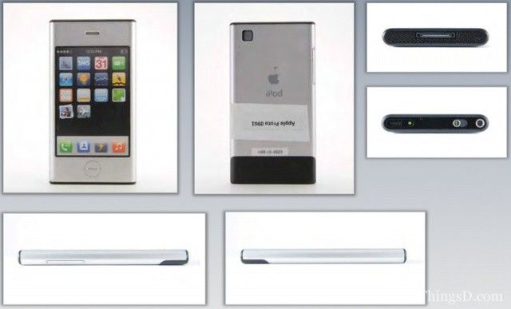

Microsoft Xbox (2001)
A 'technology push' device that stuck the landing.
Read case study →Guiding questionHow do designers approach problem-solving?
The five-phase design process is the skeleton of this course and of your IA. It is also what students are most tempted to treat as a formality, a set of headings written above work they had already decided to do. That is a waste, because the claim the model actually makes is uncomfortable and useful: you are not allowed to know the answer at the start. Empathise before you define, define before you ideate, and let each phase genuinely change what you do next.
You have almost certainly met a version of this in MYP, so the temptation is to skim. What is different here is the weight placed on iteration and evidence. Fifteen objectives looks like a lot, but they are largely one idea repeated at different scales: make a decision, test it, discover you were partly wrong, and record what changed. Designers who work this way are not slower. They fail on paper instead of in production, and a design process that shows real changes of mind will always beat one describing a straight line from problem to solution.
Students must be able toOutline each stage of the design process (empathize; defining the project; ideation and modelling; designing a solution; presenting a solution).
The design process is an iterative, human-centred framework comprising five phases:
The process is iterative, not linear. Designers regularly cycle back to earlier phases as new information emerges: re-empathising after a prototype test reveals an unexpected user need, or redefining specifications when a material constraint changes the problem.
A 'technology push' device that stuck the landing.
Read case study →
The 'One Device' to rule them all.
Read case study →
The creation of a revolutionary personal music player.
Read case study →Students must be able toDistinguish between primary and secondary sources, qualitative and quantitative data and how they are used to identify design opportunities, develop an understanding of users and generate ideas for solutions to problems.
Research is not a one-off activity at the start of a project; it runs throughout every phase of the design process. Designers collect data to identify opportunities, understand users, generate ideas and validate solutions. Two fundamental distinctions structure all design research:
Primary vs Secondary research:
Qualitative vs Quantitative data:
Effective design research combines both types: qualitative data explains the problem; quantitative data measures progress toward solving it.
Students must be able toApply primary research methods to gather first-hand data (user observations, interviews, surveys, questionnaires, focus groups, material testing and product analysis) and analyse the data to establish user requirements and design specifications, develop a persona and suggest further developments of a solution.
Primary research produces first-hand data that is specific to your design context and your users. Common methods include:
Primary data is authentic and directly relevant to your project, but it requires time, access to users and ethical consideration, particularly when working with minors or vulnerable groups.
Students must be able toAnalyse secondary data sources (internet-based research, government data and statistics research, university research and literature search) to establish user requirements and design specifications, develop a persona and suggest further developments for a solution.
Secondary research uses data collected and published by others. Designers turn to secondary sources to build background knowledge, validate primary findings, and access data at scales impossible to collect directly.
Common secondary sources in design include:
The key limitation of secondary research is relevance: data collected for a different purpose, population or context may not match your design situation. Secondary research should support (not replace) primary research.
Students must be able toIdentify issues, problems and challenges using user-centred research methods and techniques, and identify user needs for specific user groups to understand their experience, motivations and interactions with products and environments.
A persona is a research-based fictional character that represents a specific group of end-users. Unlike marketing demographics (age, gender, income), an effective persona captures the full human picture: goals and motivations, frustrations and pain points, behaviours and daily routines, and the context in which they interact with products.
Personas serve two critical functions: they focus the design team on real human needs rather than assumed needs, and they prevent "design by committee" where everyone designs for themselves.
The demographics trap: The chapter warns against relying on demographics alone. Consider two male Europeans born in the late 19th century (both leading professionals and public figures): Albert Einstein and Charlie Chaplin. Their demographic profiles are identical, yet their product needs, preferences and lifestyles differ enormously. Similarly, Marie Curie and Florence Nightingale share a female professional demographic, yet represent vastly different users.
Demographics tell you who someone is categorically, not what they need or how they behave. Effective personas require psychographic data: values, attitudes, lifestyle and context of use.
Psychographic data describes a person's values, attitudes, interests, lifestyle and motivations, the internal factors that shape how they think and behave. It sits alongside demographic data (age, gender, income, location) but answers a different question: demographics describe who someone is categorically, while psychographics describe why they make the choices they make.
Two users with identical demographics can have opposite psychographics. Two retired adults of the same age, income and location might differ completely: one is risk-averse and values routine, the other is adventurous and seeks novelty. A persona built only from demographic data would treat them as the same user; psychographic data is what makes a persona specific enough to design for.
Students must be able toMap a user's journey using a storyboard and identify pain points within that journey that provide design opportunities.
User observation involves watching users perform real tasks in their actual environment: a technique that reveals behaviours, workarounds and frustrations that users themselves may not consciously recognise or articulate in an interview.
A storyboard is a visual tool used to map a user's journey through a product experience or task sequence. Like a comic strip, it breaks the journey into discrete frames: each showing the user, their action, their environment and their emotional state at that moment. Storyboards make user journeys visible, shareable and open to critique within the design team.
Pain points are moments in the journey where the user experiences friction, frustration or failure. They are design opportunities: each pain point is a place where a better design could improve the experience. A storyboard is an effective tool for identifying and communicating pain points because it preserves the sequence and context of the problem, not just the problem itself.
After a trip to the grocery store a user places their groceries into the refrigerator.
The user places bottles on the door shelves, and discovers that the door doesn't close properly.
It is discovered that the door sags at a much lower weight than expected, slowly releasing cold air.
Designers try a variety of solutions, but even with much stronger hinges the door isn't sitting right. They try making smaller shelves, which increases the space available beyond the door.
The user once again moves their groceries into the refrigerator, but this time the door closes properly- and they still have space for large bottles.
The initial experience left the user frustrated, and while they may have preferred to have space in the door for bottles, the revision provided more room and fixed the improper seal.
Students must be able toAnalyse a range of products that either provides a solution to a problem or can inspire a solution to a problem.
Product analysis is a structured examination of an existing product to understand how it solves (or fails to solve) a problem. It is used during both the Empathise phase (understanding the current state of the world) and the Ideate phase (finding inspiration for new solutions).
A thorough product analysis examines:
Product analysis produces data that feeds directly into design specifications: what this product does well that must be matched, and where it fails that the new design must address.
Students must be able toExplain the nature of a problem by writing a problem statement that clearly defines their design intentions.
The first and most critical step in moving from Empathise to Define is writing a clear problem statement. A problem statement answers: who is experiencing what difficulty, in what context, and why does it matter?
A well-formed problem statement:
Design intention is the goal the solution must achieve, derived directly from the problem statement. Clear design intentions make subsequent decisions (about materials, features and form) much easier to justify: a feature either serves the design intention or it doesn't. Without a precise problem statement, every design decision becomes arbitrary.
Students must be able toConstruct design specifications based on primary and secondary research that communicate the essential and desirable success criteria of the redesigned product.
A design brief is the formal document produced at the end of the Define phase. It translates the problem statement into actionable direction and aligns all stakeholders (client, designers, engineers and manufacturers) around what the solution must achieve.
A design brief typically includes:
Specifications are divided into essential criteria (must be met; non-negotiable) and desirable criteria (would improve the product but are optional and can be traded against cost or time). Without clear specifications, it is impossible to evaluate whether any design iteration has succeeded.
Students must be able toApply ideation techniques to develop a range of diverse and appropriate ideas that address a problem statement and respond to design specifications.
The Ideation phase asks designers to generate as many diverse, creative solutions as possible before evaluating any of them. Several structured tools help prevent mental blocks:
Students must be able toCompare their ideas with the design specifications and user needs as they refine their solutions.
Iterative evaluation means systematically comparing each design idea against the design specifications and user needs, not once, but repeatedly as ideas evolve. At each stage, designers ask:
Design matrices (decision matrices) formalise this process: specifications are listed as rows, ideas as columns, and each cell receives a weighted score. The matrix makes trade-offs visible and defensible against stakeholder challenge.
Iterative evaluation drives targeted refinement: weak areas are identified with enough precision that the next iteration can address them specifically. This is far more efficient than building a complete prototype and discovering at that point that a fundamental specification has not been met.
Students must be able toDemonstrate iterative development of a design using the model, test, refine cycle.
The model–test–refine cycle is the engine of the Design a Solution phase. Rather than developing a finished product in a single pass, designers move through repeated loops:
This maps onto the PDSA (Plan-Do-Study-Act) cycle from quality management: Plan what to test and how; Do by building and running the test; Study what the data shows; Act by implementing changes before the next cycle.
Stakeholder feedback (from clients, users and technical experts) is incorporated at every cycle. Each iteration reduces uncertainty. A product that has been through five test–refine cycles is far better aligned with real user needs than one developed in a single extended phase.
Students must be able toCreate feasible models of an intended solution at appropriate levels of fidelity that generate performance data when tested with end-users.
A prototype is a physical or virtual model built to test a specific aspect of a design before committing to full production. Prototypes are categorised by fidelity: how closely they resemble the final product.
Low-fidelity (lo-fi) prototypes:
High-fidelity (hi-fi) prototypes:
The sequence is always lo-fi to hi-fi: only invest in expensive prototyping once a concept has survived lo-fi testing. Every prototype exists to generate test data that feeds the next iteration.
Students must be able toCreate detailed drawings of components and assembled products that communicate dimensions, scale and assembly details.
Technical drawings (also called engineering or working drawings) are the formal language of manufacturing: they convey exact dimensions, tolerances, materials, scale and assembly instructions to manufacturers anywhere in the world.
Key conventions include:
Without accurate technical drawings, the gap between a prototype and a manufactured product cannot be closed. Every dimension becomes a specification that manufacturing must achieve.
Students must be able toCreate virtual representations of a solution, highlighting key usability features, and explain how it meets the design specifications and achieves the design intentions as a proposed solution or as an improvement to an existing product.
The Present a Solution phase is the designer's opportunity to communicate the full value of their work to clients, stakeholders and users. An effective presentation goes beyond "here is what it looks like"; it tells the story of the design: the user problem, the research journey, the key design decisions, and the evidence that the solution meets its specifications.
Tools for presenting solutions include:
An effective presentation clearly states the user need being addressed, shows how key features directly respond to specific design specifications, and acknowledges limitations with a plan for future refinement. The goal is not to sell the design but to demonstrate that it is evidence-based and can withstand scrutiny.
Ten questions sampling across the fifteen learning objectives, from the five-phase process and research through to specifications, ideation and technical communication. Select one answer per question, then click "Check all answers" to see your score and the explanations.
Explain the difference between primary research and secondary research in the context of product design. Give one example of each.
Primary research involves the collection of first-hand data directly from sources relevant to the design context. This data is original and has not been interpreted by anyone else. An example is designers gathering anthropometric measurements directly from a proposed user group: the data is specific to those users and that context.
Secondary research involves the collection of data provided by a third party, such as information from textbooks, academic journals, market reports or government databases. An example is referencing a national anthropometric database rather than measuring users directly. Primary research provides authentic, context-specific data but takes time and money. Secondary research is faster and cheaper but may not perfectly match the specific design context and can become outdated.
Describe three different creativity and ideation tools from the chapter. For each tool, explain how it helps designers generate innovative solutions.
1. SCAMPER: An acronym for Substitute, Combine, Adjust, Magnify/Minify, Put to other uses, Eliminate, Reverse/Reorder. This tool helps designers by providing a structured checklist of "thought triggers." For example, a designer might ask "What can I eliminate?" or "What happens if I reverse the order of operations?" This prevents designers from getting stuck and ensures they consider multiple angles systematically.
2. Six Thinking Hats (Edward De Bono): Each coloured hat represents a different thinking mode: White (facts), Red (emotions), Black (negative/critical), Yellow (positive/optimistic), Green (new ideas), Blue (big picture/management). This tool helps teams separate different types of thinking so they do not mix criticism with creativity. Using only the Green hat, the team generates ideas without negative judgment; switching to Black hat allows evaluation.
3. Morphological analysis (Zwicky box): A visual grid that organises design parameters as rows and possible solutions for each parameter as columns. The chapter illustrates this with a bread example: flour types, leavening methods, shapes, crust types and baking methods. Every intersection of a row and column represents a different combination, revealing novel solutions that emerge from mixing parameters in unexpected ways.
A design team has collected the following feedback from user interviews about a new kitchen faucet: "The handle is stiff," "I like the brushed nickel finish," "The spray button is hard to find," "It looks expensive," and "Installation took three hours." Categorise each piece of feedback as either qualitative or quantitative. Then explain why both types of data are necessary for effective product design.
Categorisation:
Why both types are necessary: Qualitative data tells designers the "why" behind user behaviour: it reveals emotions, frustrations, preferences and motivations. The qualitative feedback above tells the team that users value aesthetics but struggle to find the spray button and experience the handle as stiff. Without qualitative data, the team would not know why users are dissatisfied. Quantitative data provides measurable, comparable numbers. The three-hour installation time is an objective metric that can be benchmarked against competitors and used to set measurable improvement targets. Together, qualitative data identifies the problem and quantitative data measures progress toward solving it. Using only one type would leave the design incomplete.
Explain why the chapter warns that "relying on demographics alone" when developing personas is problematic. Use the examples of Albert Einstein and Charlie Chaplin in your answer.
The chapter warns that relying on demographics alone is problematic because people with identical demographic profiles can have profoundly different needs, tastes and behaviours. The chapter provides the example of a male demographic profile: European nationality, born in the late 19th century, leading professional in their field, public figure, cultural icon. Based on demographics alone, Albert Einstein (physicist) and Charlie Chaplin (actor and comedian) would be grouped together as the same "user." Yet their product preferences, lifestyles and needs would differ enormously: Einstein might prioritise quiet, functional workspaces while Chaplin would value expressive, theatrical environments.
Demographics tell you who users are categorically, but not what they need or how they behave. Effective personas require richer psychographic data: goals, motivations, frustrations, daily activities and context of use. Without this additional layer, a persona based on demographics alone risks designing for an average that no real person represents.
Analyse how the iterative nature of the design process (model–test–refine cycles) helps designers avoid the 42% startup failure rate due to lack of market need mentioned in the chapter. Refer to low-fidelity and high-fidelity prototyping in your answer.
The 42% failure rate due to lack of market need occurs when companies build products nobody wants, typically because they developed in isolation without testing assumptions against real users. The iterative design process directly prevents this by forcing designers to test assumptions repeatedly rather than investing in a complete product first.
Low-fidelity prototyping (cardboard, paper sketches, foam models) allows designers to test basic concepts within hours at negligible cost. If users say "I don't understand where the handle goes" or "This doesn't fit my context," the team has wasted almost nothing. They discard the cardboard and try a different configuration. This "fail fast, fail cheap" approach ensures bad ideas are eliminated before costly resources are committed.
High-fidelity prototyping (functional models resembling the final product) comes later, after the core concept has already survived multiple rounds of lo-fi testing. Hi-fi prototypes generate meaningful performance data (task completion rates, error rates, user satisfaction scores) that lo-fi testing cannot. If problems are found at this stage, they can still be addressed before mass production at manageable cost.
The iterative cycle (PDSA) ensures every round of feedback drives refinement, then another round of testing. Each iteration reduces the risk of building a product the market does not want. A concept that has survived five user-testing cycles with genuine feedback at each stage is fundamentally less likely to fail due to lack of market need than one developed without iteration.
Free article providing a clear overview of the five-phase design thinking process with real-world examples. Search: "Interaction Design Foundation design thinking five stages".
Three-minute animated video showing how to apply each letter of SCAMPER to real problems. Search: "MindTools SCAMPER technique YouTube".
Printable one-page summary of each hat's purpose and typical questions. Search: "Six Thinking Hats quick reference cheat sheet".
Free list of all 40 TRIZ principles with examples for students exploring systematic innovation. Search: "TRIZ 40 inventive principles triz40".
Short article explaining the research behind the statistic that 42% of startups fail due to lack of market need. Search: "CB Insights why startups fail top reasons".
Free search engine for academic papers. Teaches students how to conduct secondary research literature searches. Search: "Google Scholar" or navigate directly to scholar.google.com.
Practical guide with good and bad examples for students designing their own questionnaires. Search: "SurveyMonkey how to write Likert scale question".
Nielsen Norman Group's four-minute video on creating effective, research-based personas. Search: "NNgroup persona development UCD YouTube".
Linking Questions
In the late 1990s, the PC was becoming the go-to machine for 'serious' gamers. The Sony Playstation and Nintendo 64 consoles were showing their age, compared to rapid advancements seen on desktop computers. Games like Half-Life, Age of Empires 2, Starcraft, Unreal, and Quake 3 featured cutting-edge graphics, online multiplayer, and community mods- all of which simply could not be had on consoles at the time. The tradeoff was more expensive hardware, troubleshooting, and a total lack of 'plug and play' simplicity that the consoles possessed. You could just pop in a game cartridge or disc and start playing! Microsoft was keenly aware of the growth in gaming on their operating systems, and set out to explore the potential of developing a console.
Through task analysis, interviews, and user observations, the team noted critical friction points. Gamers hated long loading screens that broke immersion. Online play was a fragmented mess, and they desperately wanted a unified "friends list" rather than managing separate accounts for every game. The PC was also isolating, and prevented the 'local multiplayer' experience that players could find with the Nintento 64 and games like Mario Kart and Super Smash Brothers.

Microsoft's response to Sony split into two rival proposals fighting for the same budget and the same slot on the roadmap. One team pitched a cheap, Windows CE machine built from the company's existing WebTV division, positioned as a general "convergence device" for internet and video as much as games. The other pitched something closer to a stripped-down gaming PC: DirectX-compatible, aimed squarely at hardcore gamers aged 16 to 26, and priced high enough to justify real performance. Both teams pitched Bill Gates directly, in the same room, more than once.
The gaming-PC team nearly lost on cost alone. Their first budget estimate was so rough it forgot to include the price of the screws. What tipped the decision their way was credibility with developers, built in part on outside advisers like Tim Sweeney and John Carmack, and a genuinely difficult spec fight over whether to include a hard drive. No competing console had one, and it added real cost. Games chief Ed Fries pushed hard anyway, arguing it would enable online play, faster loading, and saved games without a fiddly memory card. Gates was convinced, and the hard drive became one of the console's defining features.

Once the console had real backing, industrial designer Horace Luke, fresh from a stint at Nike, took his team out of the building. Rather than sketching from assumptions, they visited people's homes to watch how consoles were actually used. Two small observations reshaped the design: gamers instinctively left drink cans balanced on top of their consoles, so Luke removed the vents from the top of the case entirely and routed airflow elsewhere to keep spilled soda out of the electronics. Cables were always too short, dragging consoles onto the floor, so the team lengthened the controller cord to nine feet and added a breakaway connector so a tripped cable wouldn't pull the console down with it.
Colour and branding went through their own long cycle of iteration. Green was chosen partly because every rival, Sony, Nintendo, and Sega, had avoided it, and partly for its old association with "technology," dating back to the green phosphor of early computer monitors. The team actually preferred silver, but it was too expensive to manufacture at scale, so it survived only on the reveal prototype. The logo went through 40 to 50 rounds with an outside studio, Cinco Design, alongside a written brand story; an early cube-shaped concept was scrapped the moment Nintendo announced its own console would be called the GameCube.

Turning the concept into a shippable object meant constant negotiation between what looked good and what a factory could build at the right price. A perfectly centred DVD tray looked cleaner on paper, but airflow needs pushed it off to one side instead. A two-tone case was dropped late in development because it added roughly a dollar to every unit, real money once you're building millions of consoles. The hard drive and DVD drive couldn't sit too close to each other either, both for heat and because a dropped console could let one damage the other, and the finished case still had to be small enough to fit a media cabinet built for a VCR.
The controller, nicknamed "Duke" inside Microsoft, was sized for the hands of the player the team had defined from the start: males in their late teens and twenties. It suited that group well, but not everyone, a gap only properly addressed after launch (a story picked up in A1.1 Ergonomics, with the smaller controller built for the Japanese market). Inside the case sat a custom Nvidia graphics chip and a desktop-grade Intel processor, both squeezed into a shell no larger than the consoles already sitting in people's living rooms.

The reveal happened in two very different rooms. In March 2000, Bill Gates and Seamus Blackley stood on stage at the Game Developers Conference in San Jose and showed developers what was inside the machine: its DirectX lineage, its Nvidia graphics silicon, and the promise of one fixed hardware spec instead of the sprawling mess of configurations they had to support on PC. That was the pitch aimed at the people who would actually build the games.
Consumers got their own reveal ten months later, when Gates shared the CES 2001 stage with wrestler Dwayne "The Rock" Johnson to show off the console for the first time. Alongside it, Microsoft revealed the business model behind the hardware: rather than profit from the console itself, they would sell it near cost and recover the margin through developer royalties of about $7 per game, the same razor-and-blades approach Sony and Nintendo already used. The tagline said the rest: "Built by gamers, for gamers."
Learn more about the original Xbox, development, and games. (Wikipedia)
Watch the cringeworthy Bill Gates and Dwayne 'The Rock' Johnson presentation here. (Youtube)
The hard drive is the clearest evidence that Xbox's design process wasn't a straight line. Cost pressure nearly cut it entirely, since no rival console shipped with one and it wasn't cheap to include. Games chief Ed Fries forced the team back into the Define phase anyway, arguing that always-on storage would let players jump into online matches, cut load times, and save games without fumbling for a memory card. Gates agreed, and the hard drive went from a maybe to a locked specification.
The loop didn't stop at launch either. Once the console reached Japan, it became clear the "Duke" controller, sized around Microsoft's core North American demographic, didn't fit everyone. That story, and the smaller controller it produced, belongs to A1.1 Ergonomics rather than here, since the fix came well after Xbox had already shipped.

Apple's design team, led by Jony Ive, spent hundreds of hours conducting ethnographic studies watching people interact with their mobile devices. They noticed a recurring pattern of frustration: users constantly misplaced their styluses, text entry on tiny plastic keyboards was error-prone, and the mobile internet was a stripped-down, text-only ghost of the real web.
Designers mapped out "thumb reach zones" on physical devices, realizing that mobile interaction shouldn't force the human hand to adapt to rigid plastic buttons; the device should adapt to the hand.

The design brief was distilled by Steve Jobs into a historic, three-pronged problem statement: Design a widescreen iPod with touch controls, a revolutionary mobile phone, and a breakthrough internet communications device: all integrated into a single, seamless product.
The constraints were uncompromising: No physical keyboard. No stylus. The user's finger would be the primary input tool. The minimum product specifications required a massive 3.5-inch capacitive screen, multi-touch gestures, and a fully functional desktop-class operating system (OS X) scaled down for a pocket device.

The ideation phase was incredibly chaotic, generating over 200 distinct physical and digital prototypes. Apple split into two competing design tracks. One track, codenamed P1, tried to adapt the existing iPod click-wheel into a phone dialer (which failed miserably during user testing).
The second track, P2, experimented with experimental multi-touch glass panels. Designers built giant, iPad-sized plastic slabs bolted to workbenches, wired to external computer towers, just to simulate what scrolling through a list with a finger might feel like. They even used dummy plastic blocks with taped-over screens to test weight, thickness, and pocketability without revealing the software.

Developing the iPhone required massive breakthroughs in material science and user interface testing. Originally, the screen was meant to be heavy-duty plastic. However, after Steve Jobs carried a prototype in his pocket for a few weeks, he realized keys easily scratched the surface. The design team looped back to source an entirely unreleased material from Corning: Gorilla Glass.
Engineers ran over 100 UI tests just to perfect the "rubber-band scrolling" effect (where a list bounces when it hits the bottom), ensuring the software felt physically responsive. Hardware designers redesigned the internal steel band (which doubled as the device's antenna) five times to maintain structural integrity while ensuring cellular reception.
On January 9, 2007, the iPhone was presented to the world in what is widely considered the most successful product keynote in history. To convince a skeptical public used to physical keyboards, the presentation focused heavily on user interface feedback mechanisms.
The live demo highlighted the intuitive "slide to unlock" animation and the magical "pinch-to-zoom" gesture. Technical documentation released alongside the launch illustrated the highly complex layered construction of the display: an LCD screen, a digitizer grid, and a capacitive touch sensor stack working in perfect harmony.
Watch Steve Jobs predict the future when introducing the world to the iPhone. (Youtube)
Learn more about the iPhone's development and hardware. (Wikipedia)
The iPhone's development was a masterclass in design agility. Just two months before the official launch, the team realized that the plastic screen formulation was fundamentally flawed for daily use, forcing a sudden loop from the Design a Solution phase back to Material Specifications. Furthermore, early testing with users who had larger fingers revealed high error rates on digital keys, forcing designers to loop back, re-empathize, and rewrite the software algorithms to create a dynamic "invisible" 44-point touch target area that anticipated which letter the user intended to hit next.
Masaru Ibuka closely observed the daily habits of urban commuters and teenagers. He noticed business executives carrying heavy, briefcase-sized tape recorders just to listen to audio on trains. Even more fascinatingly, he observed that young people were misusing existing technology: they would press the "record" button on heavy portable dictation machines just to use them as playback devices, completely ignoring the microphone.
The deep user insight was clear: there was a massive, unaddressed emotional and functional need for private audio spaces in crowded, public environments.

The design brief was highly restrictive and completely flipped the audio industry on its head: Design a stereo cassette playback device under 500 grams that runs on standard AA batteries and can comfortably fit into a coat pocket.
Crucially, the engineering team made a radical choice during the definition phase: remove the recording function entirely. In 1979, an audio device that couldn't record was seen as commercial suicide, but the team defined the lack of a microphone as a feature, not a bug, to keep the device compact, lightweight, and entirely focused on high-quality playback.

To move quickly, the engineering team bypassed building a prototype from scratch. Instead, they used a donor device: the Sony Pressman, a rugged, mono dictation recorder built for journalists.
Engineers hacked the Pressman by ripping out the internal speaker and recording head, replacing them with a custom-engineered stereo amplifier circuit. They built crude physical models using lightweight foam padding and fake leather straps to test how comfortably the device could be worn on a user's hip or shoulder. As a last-minute ideation breakthrough to promote sharing, they added a second headphone jack so two people could listen at once.

Translating the hacked prototype into a consumer product meant overcoming intense engineering constraints. Traditional headphones of the era were massive, heavy, and weighed more than the Walkman itself. Sony had to concurrently design a new lightweight headphone line (weighing just 50 grams).
To maximize battery life, engineers meticulously adjusted the internal electrical impedance of the system from 8Ω to 16Ω. They also re-engineered the main housing, moving from the heavy machined metal of the Pressman prototype to a high-impact ABS plastic chassis, which drastically lowered manufacturing costs and overall product weight.

Sony launched the Walkman using an incredibly aggressive, experiential marketing campaign targeted squarely at youth culture. Instead of traditional static advertisements detailing technical specs, Sony hired actors, skateboarders, and joggers to traverse the busy streets of Tokyo, handing headphones to pedestrians so they could experience high-fidelity, portable stereo sound for themselves.
The technical drawings distributed to distributors emphasized the beautifully compact, folded gear train and the precision spring-loaded pinch rollers that allowed the tape mechanism to play smoothly even while the user was running.
Learn more about the development of the Walkman (Nippon.com)
The Walkman's journey showcases how material and market testing alters a product's DNA. The project shifted from a metal chassis to high-impact ABS plastic after structural stress testing showed that metal dented easily when dropped by active users. Additionally, during real-world user testing, the team realized that isolation could feel antisocial or dangerous on busy city streets. They looped back to the ideation phase and designed a mechanical orange button called the "Hot Line": when pressed, it lowered the music volume and activated a small built-in microphone so users could talk to each other without removing their headphones.